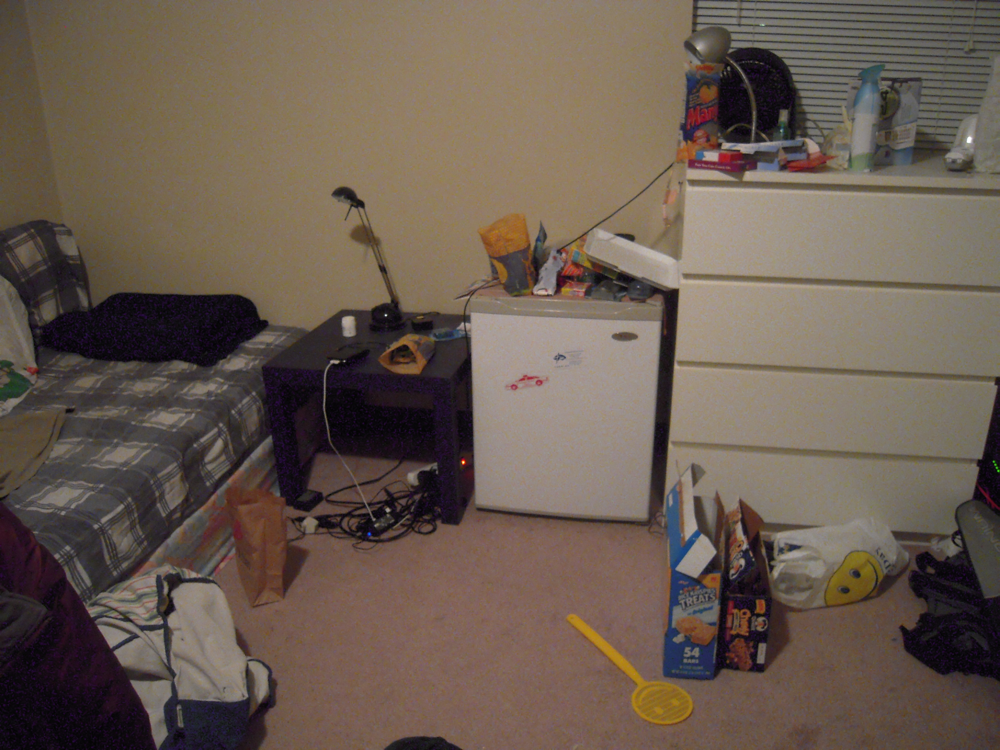
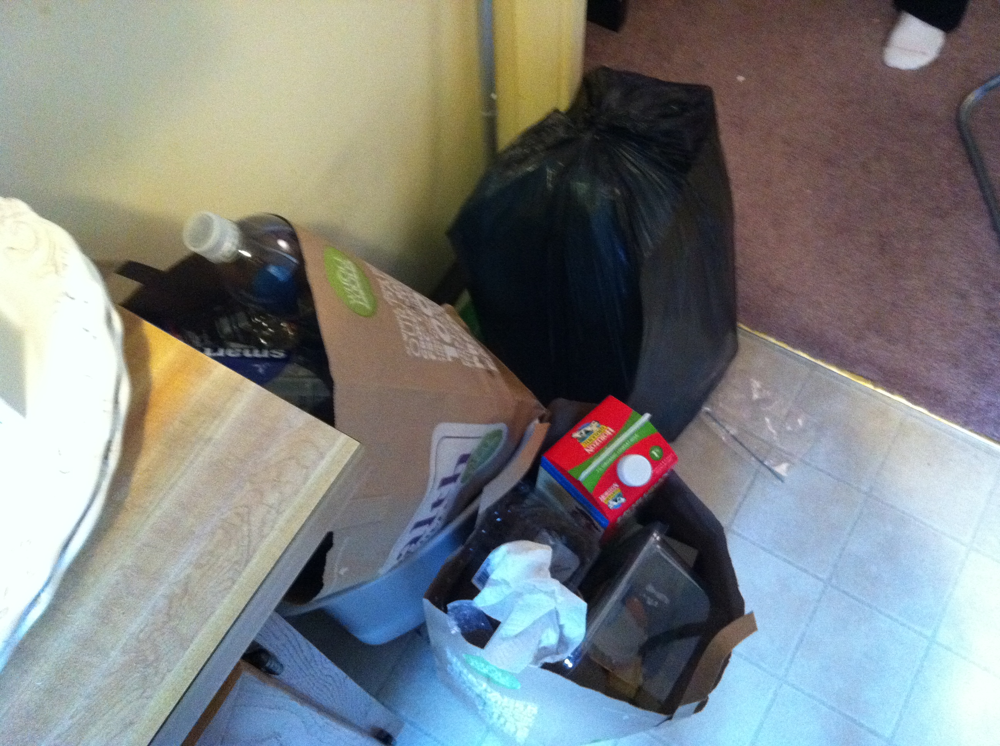
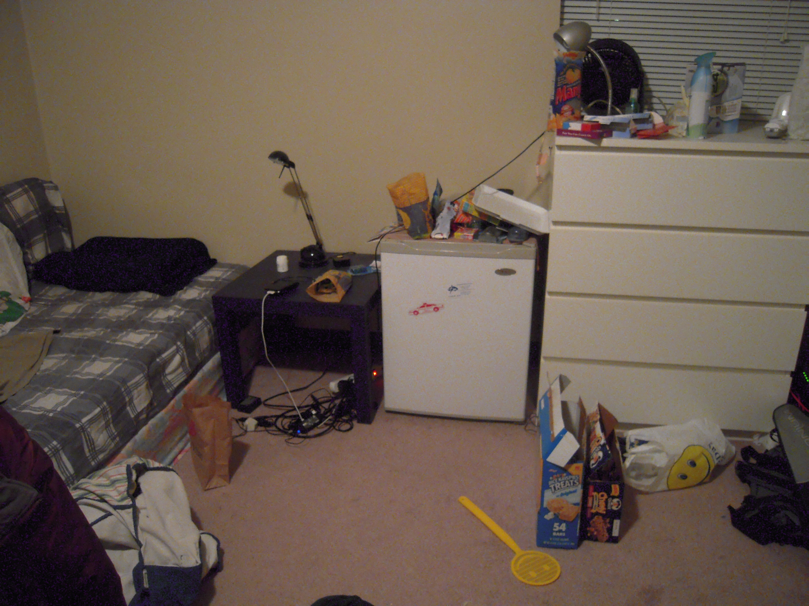
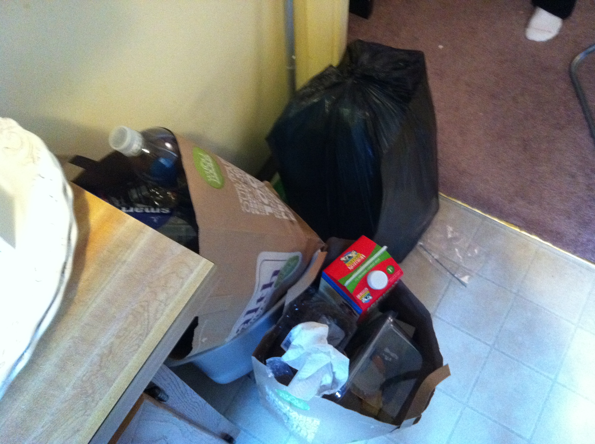

Recap of Research
02.Research Findings
Roommates often have different habits and chores at home
"When I cook, I try to get the dishes done immediately, but my roommate piles them up."
"Last semester, she always cleaned and I always got food."
Tasks are easily missed (either accidentally or on purpose)
"Toilet paper is so inconvenient. Sometimes when we run out and forget to buy more, I just go to the bathroom in the UC instead of my apartment."
"I let the garbage pile up because my roommate never takes out the trash."
"In the kitchen, we run out of everything: milk, bread, bananas, butter, eggs."


Caring about cleanliness can seem burdensome
"We just leave stuff around until it seriously bothers one of us and then we deal with it."

 


